, ¼, 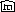}ÈQ.
The elements of the set can be represented by binary strings of identical length k.
, ¼, 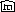}ÈQ.
The elements of the set can be represented by binary strings of identical length k.  , ¼ ,
are assumed to be new symbols corresponding to the heads of M.
, ¼ ,
are assumed to be new symbols corresponding to the heads of M.
From Sequential Time to Circuit Size
A Modified Version of M
A Circuit cn for Simulating M
The Subcircuit MOVE i
A Uniform Circuits Constructor
From Circuits Size to Sequential Time
U_FNC, U_NC, and NC
Sequential Space and Parallel Time
The size of circuits is a major resource for parallel computations, as is time for sequential computations. The following theorem shows that these two types of resources are polynomially related.
Notation In what follows DTIME _F (T(n)) will denote the class of functions computable by O(T(n)) time-bounded, deterministic Turing transducers. The class of functions with size complexity SIZE _F (Z(n)) will be denoted O(Z(n)). The class of languages whose characteristic functions are in SIZE _F (Z(n)) will be denoted SIZE (Z(n)) . U_SIZE _F (Z(n)) will denote the class of functions computable by uniform families of circuits of size complexity O(Z(n)). The class of languages whose characteristic functions are in U_SIZE _F (Z(n)) will be denoted U_SIZE (Z(n)) . U_DEPTH _F (D(n)) will denote the class of functions computable by uniform families of circuits of depth complexity O(D(n)), and the class of languages whose characteristic functions are in U_DEPTH _F (D(n)) will be denoted U_DEPTH (D(n)) . U_SIZE _DEPTH _F (Z(n), D(n)) will denote the class of functions computable by uniform families of circuits with simultaneous size complexity Z(n) and depth complexity D(n).
Theorem 7.5.1 If log T(n) is fully space-constructible, then
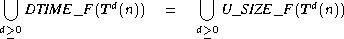
The proof of the theorem is implied from the two lemmas below.
From Sequential Time to Circuit Size
The proof of the first lemma consists of unrolling the hardware of deterministic Turing transducers.
Lemma 7.5.1 If log T(n) is fully space-constructible, then
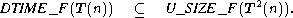
Proof Consider any T(n) time-bounded, deterministic Turing transducer M = <Q, S, G, D, d, q0, B, F>, where log T(n) is fully space-constructible. With no loss of generality assume that S = {0, 1}. Let m denote the number of auxiliary work tapes of M.
Assume that D does not contain the symbols a and b. Modify M in the following way.
A circuit cn of the following form can simulate the original M on inputs of length n, by simulating the first t = 2élog (T(n)+1)ù moves of the modified M on the given input.
The simulation of exactly t = 2élog (T(n)+1)ù moves of (the modified) M, allows cn to generate outputs of identical length t for all the inputs of length n. Such a uniformity in the length of the outputs is needed because of the circuits' rigidity in the length of their outputs.
The choice of t = 2élog (T(n)+1)ù instead of T(n) + 1 for the number of moves of M, is made to allow the value to be calculated just by marking a space of size O(log T(n)).
cn assumes some fixed binary representation for the set SÈGÈDÈ{a, b, ¢, $, -1, 0, +1, , ¼, 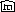}ÈQ.
The elements of the set can be represented by binary strings of identical length k. , ¼ ,
are assumed to be new symbols corresponding to the heads of M.
cn consists of t + 2 subcircuits, referred to as IN, MOVE1, ¼ , MOVE t, and OUT, respectively (see Figure 7.5.1).
|
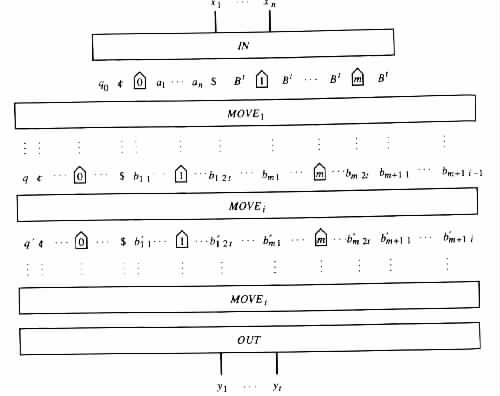
|
IN is a subcircuit which derives the initial (i.e., 0th) configuration
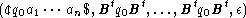
of M on the given input a1 · · · an. IN uses the values a1, ¼ , an of the input nodes x1, ¼ , xn; the values of some constant nodes 0; and the values of some constant nodes 1 for obtaining the desired (representation of the) configuration.
The subcircuit MOVEi, 1 £ i £ t, derives the ith configuration
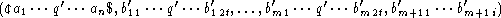
of M from the i - 1st configuration
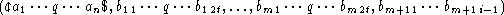
of M.
OUT is a subcircuit that extracts the (encoding of the) output b1 · · · bt that M has in the tth configuration. OUT does so by eliminating the symbols that are not in D È {a, b}, for example, by using AND gates.
MOVE i uses components PREFIX _FINDER and SUFFIX _FINDER for determining the transition rule (q, a, b1, ¼, bm, p, d0, c1, d1, ¼, cm, dm, r) that M uses in its ith move (see Figure 7.5.2).
|
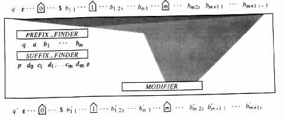
|
PREFIX _FINDER has a component FINDER i, 0 £ i £ m, corresponding to each of the nonoutput tapes of M (see Figure 7.5.3).
|
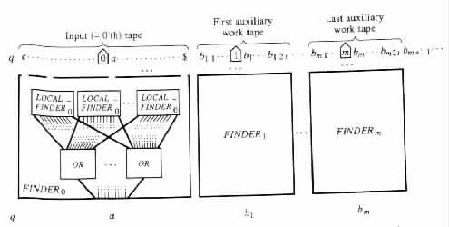
|
SUFFIX _FINDER on input (q, a, b1, ¼, bm) employs a table look-up approach to find (p, d0, c1, d1, ¼, cm, dm, r).
MODIFIER contains one component TAPE _MODIFIER i for each of the nonoutput tapes i of the Turing transducer M, 0 £ i £ m (see Figure 7.5.4).
|
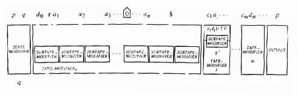
|
A Uniform Circuits Constructor
IN has size 0. Each FINDER i contains O(T(n)) subcircuits LOCAL _FINDER i, and a constant number of subcircuits OR. Each LOCAL _FINDER i has constant size. Each subcircuit OR has size O(T(n)). Hence, PREFIX _FINDER has size O(T(n)). SUFFIX _ FINDER has constant size, and TAPE _MODIFIER has size O(T(n)). Consequently, cn has size O(T2(n)).
An O(log T(n)) space-bounded, deterministic Turing transducer X can be
constructed, to compute { (1n, cn) | n ³ 0 } in a brute-force manner. 
Example 7.5.1
Let M be the one auxiliary-work-tape deterministic Turing transducer in Figure 7.5.5(a).
M has time complexity T(n) = n + 1. For the purpose of the example take M as it
is, without modifications. Using the terminology in the proof of Lemma 7.5.1,
Q = {q0, q1, ¼, q4}, S = D = {0, 1}, G = {0, 1, B}, m = 1, and k = 4. Choose the
following binary representation E: E(0) = 0000, E(1) = 0001, E(¢) = 0010,
E($) = 0011, E(B) = 0100, E(a) = 0101, E(b) = 0110, E( ) = 0111,
E(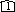) = 1000, E(q0) = 1001, E(q1) = 1010, E(q2) = 1011, E(q3) = 1100,
E(q4) = 1101, E(-1) = 1110, E(+1) = 1111. Choose n = 3.
) = 0111,
E(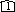) = 1000, E(q0) = 1001, E(q1) = 1010, E(q2) = 1011, E(q3) = 1100,
E(q4) = 1101, E(-1) = 1110, E(+1) = 1111. Choose n = 3.
|
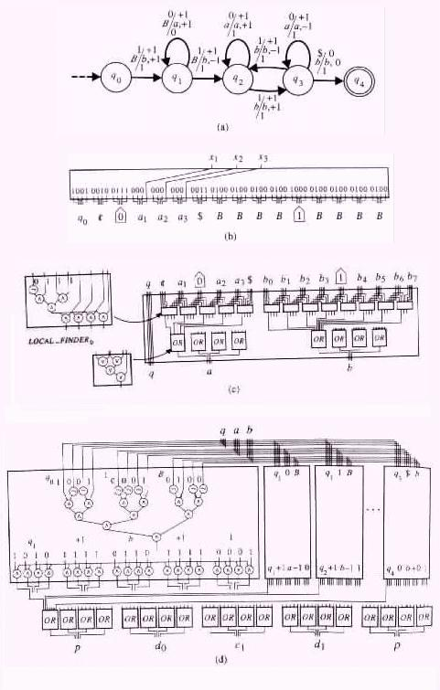
|
In such a case, t = 4. The subcircuit IN is given in Figure 7.5.5(b), the subcircuit
PREFIX _FINDER is given in Figure 7.5.5(c), and the subcircuit SUFFIX _FINDER is given in
Figure 7.5.5(d).
From Circuits Size to Sequential Time
The previous lemma deals with applying parallelism for simulating sequential computations. The following lemma deals with the simulation of parallel computations by sequential computations.
Lemma 7.5.2 U_SIZE _F (Z(n)) Í È d³0DTIME _F (Zd(n)).
Proof Consider any function Z(n), and any uniform family C = (c0, c1, c2, ¼ ) of circuits of size complexity Z(n). Let X be an O(log Z(n)) space-bounded, deterministic Turing transducer that computes the function { (1n, cn) | n ³ 0 }. A deterministic Turing transducer M can compute the same function as C in the following manner.
Given an input a1 · · · an, M employs X to determine the representation of the circuit cn. The representation can be found in 2O(log Z(n)) = ZO(1)(n) time because X is O(log Z(n)) space-bounded (see Theorem 5.5.1). Moreover, the representation has length O(Z(n)log Z(n)) because cn has at most Z(n) gates, and each gate (g, t, gL, gR) has a representation of length O(log Z(n)).
Having the representation of cn, the Turing transducer M evaluates the output of each node in cn. M does so by repeatedly scanning the representation of cn for quadruples (g, t, gL, gR), that correspond to nodes gL and gR, whose output values are already known. Having found such a quadruple (g, t, gL, gR), the Turing transducer M evaluates and also records the output value of g. After at most Z(n) iterations, M determines the output values of all the nodes in cn.
Finally, M determines which nodes of cn are the output nodes, and writes out their
values.
By Theorem 7.5.1, the time of sequential computations and the size of uniform families of circuits are polynomially related.
Corollary 7.5.1 A problem is solvable in polynomial time if and only if it is solvable by a uniform family of circuits of polynomial size complexity.
Sequential computations are considered feasible only if they are polynomially time- bounded. Similarly, families of circuits are considered feasible only if they are polynomially size-bounded. As a result, parallelism does not seem to have major influence on problems that are not solvable in polynomial time. On the other hand, for those problems that are solvable in polynomial time, parallelism is of central importance when it can significantly increase computing speed. One such class of problems is that which can be solved by uniform families of circuits, simultaneously having polynomial size complexity and polylog (i.e., O(login) for some i ³ 0) depth complexity. This class of problems is denoted U_FNC .
The subclass of U_FNC, which is obtained by restricting the depth complexity of the families of circuits to O(login), is denoted U_FNC i. The subclass of decision problems in U_FNC is denoted U_NC . The subclass of decision problems in U_FNC i is denoted U_NCi.
FNC denotes the class of problems solvable by (not necessarily uniform) families of circuits that simultaneously, have polynomial size complexity and polylog depth complexity. The subclass of decision problems in FNC is denoted NC . The subclass of FNC, obtained by restricting the families of circuits to depth complexity O(login), is denoted FNC i. NC i denotes the class of decision problems in FNC i.
For nonuniform families of circuits the following contrasting theorem holds.
Theorem 7.5.2 NC1 contains undecidable problems.
Proof Every unary language L over the alphabet {1} can be decided by a family C = (c0, c1, c2, ¼ ) of circuits of simultaneous polynomial size complexity and logarithmic depth complexity. Specifically, each cn in C is a table look-up circuit that outputs 1 on a given input a1 · · · an if and only if a1 · · · an = 1n and 1n is in L.
However, a proof by diagonalization implies that the membership problem is
undecidable for the unary language { 1i | The Turing machine Mi does not accept the
string 1i }.
Sequential Space and Parallel Time
By Corollary 7.5.1, the definitions above, and the following lemma, the hierarchy shown in Figure 7.5.6 holds.
|
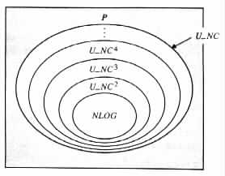
|
Proof Consider any S(n) = O(log n) space-bounded, nondeterministic Turing machine M = <Q, S, G, d, q0, B, F> with m auxiliary work tapes. With no loss of generality assume that S = {0, 1}. Let a tuple w = (q, i, a, u1, v1, ¼, um, vm) be called a partial configuration of M on input a1 · · · an, if M has a configuration (aqab, u1qv1, ¼, umqvm) with aab = ¢a1 · · · an$ and |a| = i. Let a partial configuration be called an initial partial configuration if it corresponds to an initial configuration. Let a partial configuration be called an accepting partial configuration if it corresponds to an accepting configuration.
Each partial configuration of M requires O(log n) space. The number k of partial configurations w1, ¼ , wk that M has on the set of inputs of length n satisfies k = 2O(log n) = nO(1).
Say that M can directly reach partial configuration w' from partial configuration w if
w and w' correspond to some configurations Ow and Ow' of M, respectively, such that
Ow  Ow' . Say that M can reach partial configuration w' from partial configuration w if w
and w' correspond to some configurations Ow and Ow' of M, respectively, such that
Ow * Ow' .
Ow' . Say that M can reach partial configuration w' from partial configuration w if w
and w' correspond to some configurations Ow and Ow' of M, respectively, such that
Ow * Ow' .
For the given n, the language L(M) Ç {0, 1}n is decidable by a circuit cn that consists of élog kù + 2 subcircuits, namely, DIRECT, FINAL, and élog kù copies of INDIRECT (Figure 7.5.7).
|
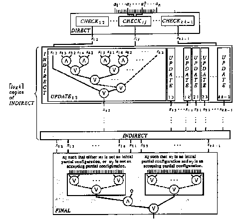
|
DIRECT has a component CHECK i j for each possible pair (wi, wj) of distinct partial configurations of M on the inputs of length n. CHECK i j has the output 1 on a given input a1 · · · an if wi as well as wj are partial configurations of M on input a1 · · · an, and M can directly reach wj from wi. Otherwise, CHECKi j has the output 0.
The component CHECK i j is a table look-up circuit. Specifically, assume that
CHECKi j corresponds to the partial configurations wi = (q, l, a, u1, v1, ¼, um, vm) and
wj = ( , 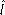, â, û1,
, 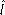, â, û1,  1, ¼, ûm, 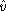m). In such a case, CHECK i j is the constant node 0 when M
cannot directly reach wj from wi. On the other hand, when M can directly reach wj from
wi, then CHECKi j is a circuit that has the output 1 on input a1 · · · an if and only
if the l + 1st symbol in ¢a1 · · · an$ is a and the + 1st symbol in ¢a1 · · · an$ is
â.
1, ¼, ûm, 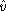m). In such a case, CHECK i j is the constant node 0 when M
cannot directly reach wj from wi. On the other hand, when M can directly reach wj from
wi, then CHECKi j is a circuit that has the output 1 on input a1 · · · an if and only
if the l + 1st symbol in ¢a1 · · · an$ is a and the + 1st symbol in ¢a1 · · · an$ is
â.
Each copy of the subcircuit INDIRECT modifies the values of the "variables" x 1 2, x1 3, ¼ , x n n-1 in parallel, where the value of x i j is modified by a component called UPDATE i j. Upon reaching the rth INDIRECT the variable x i j holds 1 if and only if M can reach wj from wi in at most 2r moves (through partial configurations of M on the given input), 1 £ r £ élog kù. Upon leaving the rth INDIRECT the variable x i j holds 1 if and only if M can reach wj from wi in at most 2r+1 moves. In particular, upon reaching the first INDIRECT, x i j holds the output of CHECK i j. However, upon leaving the last INDIRECT, x i j holds 1 if and only if M can reach wj from wi.
FINAL determines whether M can reach an accepting partial configuration from an initial partial configuration on the given input a1 · · · an, that is, whether x i j is equal to 1 for some initial partial configuration wi and some accepting partial configuration wj.
The subcircuit DIRECT has size O(k2) = nO(1) and constant depth. Each of the
subcircuits FINAL and INDIRECT has size no greater than O(k2) = nO(1) and depth no
greater than O(log k) = O(log n). As a result, the circuit cn has size of at most
O(k2(élog kù + 2)) = nO(1), and depth of at most O((élog kù + 2)log k) = O(log2n).
The containment of DLOG in U_NC and the conjecture that U_NC is properly contained in P, suggest that the P-complete problems can not be solved efficiently by parallel programs. The following theorem provides a tool for detecting problems that can be solved efficiently by parallel programs (e.g., the problems in Exercise 5.1.8). Moreover, the proof of the theorem implies an approach for mechanically obtaining the parallel programs from corresponding nondeterministic sequential programs that solve the problems.
Notation In what follows, NSPACE _F (S(n)) denotes the set of functions computable by O(S(n)) space-bounded, nondeterministic Turing transducers.
Theorem 7.5.3 NSPACE _F (log n) Í U_FNC 2.
Proof Consider any Turing transducer M = <Q, S, G, D, d, q0, B, F> of space complexity S(n) = O(log n). Assume that M computes some function f. In addition, with no loss of generality assume that S = D = {0, 1}. From M, for each symbol a in S, a Turing machine Ma = <Qa, S, G, da, q0a, B, Fa> can be constructed to accept the language { 1i0x | The ith output symbol of M on input x is a }.
Specifically, on a given input 1i0x, Ma records the value of i in binary on an auxiliary work tape. Then Ma follows the computation of M on input x. During the simulated computation, Ma uses the stored value of i to find the ith symbol in the output of M, while ignoring the output itself. Ma accepts 1i0x if and only if M has an accepting computation on input x with a as the ith symbol in the output.
The function f is computable by a family C = (c0, c1, c2, ¼ ) of circuits of the following form. Each cn provides an output y1 · · · y2S(n)+1 of length 2 · 2S(n) on input x1 · · · xn. Each substring y2j-1y2j of the output is equal to 00, 11, or 10, depending on whether the jth symbol in the output of M is 0, 1, or undefined, respectively. y2j-1 is obtained by negating the output of a circuit that simulates Ma for a = 0 on input 1j0x1 · · · xn. y2j is obtained by a circuit that simulates Ma for a = 1 on input 1j0x1 · · · xn.
The result then follows from Lemma 7.5.3 because Ma is a logspace-bounded, Turing
machine for a = 0 and for a = 1.
A proof similar to the one provided for the previous theorem can be used to show that NSPACE _F (S(n)) Í Èd>0 U_SIZE _DEPTH _F (2dS(n), S2(n)) for each fully space-constructible function S(n) ³ log n. By this containment and a proof similar to that of Exercise 7.5.3, the space requirements of sequential computations and the time requirements of parallel computations are polynomially related.